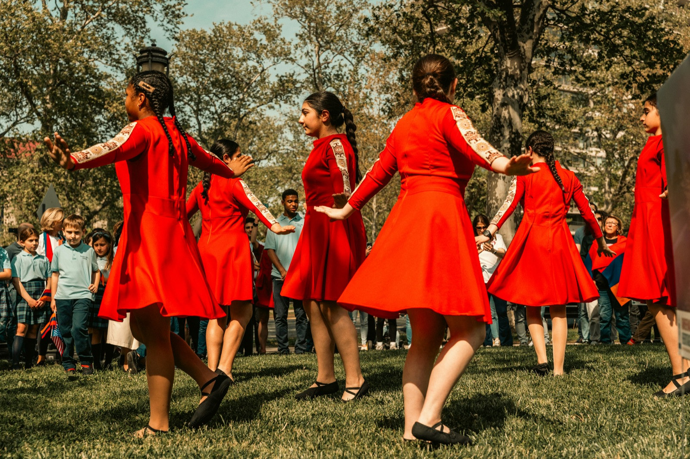

Meliorism2.com
·
May 27, 2026
·
Issue 027
The
Tide Chart
When 70,000 people share one stadium, something neurological fires that no screen can replicate.
When 70,000 people share one stadium, something neurological fires that no screen can replicate.

When 70,000 people share one stadium, their brains begin to do something measurable: neural patterns synchronize across strangers. Uri Hasson's lab captured it in fMRI — speaker and listener brains couple, the listener's cortex mirroring the speaker's activity with a slight temporal lag. This is not metaphor. This is physiology. Screens do not produce it. Physical proximity, shared rhythm, synchronized motion — these are not amenities of in-person experience. They are the mechanism. The practitioner who understands co-presence as biology can design for it deliberately. The one who treats it as vibe is flying without instruments.
You've been in the room when it happened. Thirty people who have never met, ninety minutes into a well-designed workshop, and something shifts. The laughter becomes easier, the questions sharper, the silences less defensive. People start finishing each other's half-formed thoughts. Nobody called it. It arrived.
You've also been in the virtual room when it didn't. Same curriculum. Same facilitator. Same cohort on paper. The connection that would have occurred in the room stayed shallow, transactional — a series of Zoom rectangles performing approximations of presence. The conversation moved. Nothing else did.
The gap between those two experiences is not aesthetic. It is not about facilitator skill or content quality or group chemistry as a mysterious thing. The gap is biological. Something happens in physical co-presence that does not happen on screen — something measurable, replicable, and — once understood — designable.
The research has been accumulating for two decades. Neural coupling studies, social baseline theory, mirror neuron systems, synchrony research — each from a different lab, each pointing at the same phenomenon. When bodies share space, time, and movement, something activates between them that remote contact does not produce. Not a lesser version of the same thing. A categorically different neurological event.
The practitioner who understands this operates differently. Not because they have a better philosophy of in-person work, but because they understand the mechanism. They know what activates co-presence, what disrupts it, how it rises and recedes across a session, and what it means to try to push for depth when the tide is already going out.
The research is not speculative. These are peer-reviewed findings with direct implications for anyone who designs or delivers learning in physical space.
Hasson's lab recorded fMRI data from speakers telling unrehearsed stories and from listeners hearing those same stories. The finding: neural activity in the listener's brain began to mirror the speaker's neural patterns, with a reliable temporal lag of one to three seconds. The degree of coupling predicted comprehension scores — the more tightly the listener's brain synchronized with the speaker's, the more accurately they understood and could recall the content. Hasson called this brain-to-brain coupling: a direct neural mechanism by which shared meaning is created between people. The implications extend beyond passive listening. Facilitators who generate stronger neural coupling in the room are not better storytellers in a qualitative sense. They are producing a measurably different neurological event in the people across from them.
Coan's Social Baseline Theory starts from an evolutionary proposition: the human nervous system treats social proximity as the baseline state, not as a bonus. In the presence of trusted others, the brain literally offloads threat-appraisal costs. fMRI studies measuring neural response to threat stimuli showed that holding a stranger's hand reduced activation in threat-response regions of the brain — and holding a spouse's hand reduced it further. The proximity of another person reduces the metabolic burden of threat perception. Alone, every ambiguous stimulus must be processed at full cost. With another body nearby, the cognitive load is distributed. Screen-mediated contact does not produce this effect with the same magnitude. Presence is not a preference. It is a computational resource.
Giacomo Rizzolatti's discovery of mirror neurons in macaque monkeys — cells that fire both when an animal performs an action and when it observes another performing the same action — established a neurological basis for embodied simulation. Marco Iacoboni's subsequent work in humans extended this to social cognition: the mirror neuron system underlies our capacity to understand others' intentions, emotions, and states not through inference but through direct motor resonance. When we watch someone move, our motor cortex activates as though we are moving. When we watch someone grimace, our pain-processing regions activate. This is not sympathy in a soft sense. It is a hard-wired simulation engine. In-person, this engine runs at full capacity. On screen, spatial reduction, latency, and compression degrade the signal the mirror system is trying to read.
Co-presence in a room is not a binary state. It does not flip on at 9am and off at 5pm. It rises and recedes in waves — shaped by proximity, rhythm, shared experience, cognitive load, physical comfort, the quality of the previous hour, and the hundred micro-events between arrival and departure. The practitioner's job is not to maximize co-presence. It is to read where the group is on the arc and design for that moment.
Every in-person session moves through a version of this pattern: Rising — social proximity activates, neural coupling begins, the mirror system comes online. Holding — deep co-presence, the room's collective nervous system at peak synchrony. Receding — fatigue, satiation, cognitive load, or post-lunch physiology draws the tide back. The practitioner who tries to hold the group in a Holding state when the tide is receding is working against biology. The practitioner who reads the arc can design re-activation, or rest, or deliberate surface work until the tide rises again.
Bodies settling into proximity. Social threat-appraisal dropping. Mirror system engaging. The group is arriving neurologically, not just physically. Design for: movement, low-stakes interaction, parallel physical activity. Do not push for depth here — co-presence hasn't reached holding strength yet.
Neural coupling active. Social baseline costs at minimum. The room is capable of genuine vulnerability, complexity, and sustained attention. Design for: deep inquiry, difficult conversation, vulnerable sharing. This is the window. It is time-limited. Read it accurately.
Metabolic cost of attention rising. Mirror system fatiguing. Co-presence has not ended, but the depth window has closed. Design for: synthesis, application, structured reflection. Do not try to crack open another layer of depth. The tide is out. Wait for the next rising.
Alex Pentland's work on social physics adds the energy dimension: physical proximity generates what he calls "idea flow" — the spontaneous transmission of behaviors and concepts through physical co-presence, gesture, and synchronization. Pentland's data from sociometric badges showed that energy levels in a room — measured by movement, vocal pitch variation, and physical proximity patterns — predicted the adoption of new ideas far more accurately than the content of what was said. The tide is not just emotional. It is energetic and informational.
Practical design principle: synchronized rhythm activates co-presence. Music before a session, a shared physical warm-up, synchronized breath, walking together — these are not nice-to-haves. They are tide-raising interventions. The practitioner who opens with three minutes of synchronized movement is not doing a "fun icebreaker." They are running a biological protocol.
The case for co-presence is strong. The edge cases are real. A practitioner who treats co-presence as an unqualified good is missing three complications that belong in every design brief.
Edge 01 · When Co-Presence Becomes GroupthinkNeural coupling is the mechanism by which shared meaning is created. It is also the mechanism by which dissent becomes costly. A highly synchronized group is a group that has, neurologically, begun to share a single field of salience — what the group notices together is what gets processed; what no one raises disappears. The practitioner who has successfully raised co-presence to a Holding state has also raised the conformity pressure. People in deep synchrony are less likely to voice discrepant views.
The design response is not to reduce co-presence but to introduce structured divergence into the Holding phase: individual silent reflection before group discussion, anonymous input channels, devil's advocate roles with explicit permission. Co-presence raises the quality of connection. The practitioner is responsible for ensuring that connection doesn't collapse the diversity it was meant to serve.
Edge 02 · Trauma-Informed ProximitySocial Baseline Theory describes proximity as load-reducing — for people with secure attachment histories and no trauma associations with physical closeness. For people with trauma histories involving physical space violations — domestic violence, sexual assault, certain forms of childhood harm — close physical proximity does not reduce threat-appraisal costs. It raises them.
The practitioner working in a room that may include survivors cannot assume that co-presence protocols designed for the neurotypical average will land safely for everyone. Explicit physical boundary contracts at session opening, opt-out provisions for any physical activity, and room design that allows participants to choose their proximity level are not accommodations for edge cases. They are design standards.
Edge 03 · The Hybrid RoomThe hybrid room — some participants in the physical space, some joining by screen — does not split the difference between in-person and remote. It creates two distinct populations with radically different neurological experiences, sharing a nominal group identity. The in-room participants activate neural coupling, social baseline reduction, and mirror system engagement. The remote participants do not. They observe the in-room group from outside it, watching co-presence they cannot join.
This asymmetry is not a technical problem solvable by better AV. It is a biological reality. The practitioner's response is to name it explicitly — acknowledging that the two cohorts are having different experiences — and to design distinct engagement pathways for each rather than pretending a single curriculum can serve both equally.
Edge 04 · When Low Co-Presence Is CorrectNot every session needs a Holding state. Competitive contexts, adversarial negotiations, and certain forms of evaluative feedback may be better served by deliberate distance — reduced synchrony, formal structure, reduced physical intimacy. The practitioner who understands co-presence as a dial, not a goal, can set it appropriately for each context. Sometimes the right tide level is low. The skill is knowing which.
Human beings have been learning in physical proximity since before language. The transfer of skill from experienced body to apprentice body — watch, mirror, adjust, repeat — predates writing, schooling, and theory by hundreds of thousands of years. The apprenticeship model is not a pedagogical choice. It is the default operating system of the species.
What the apprenticeship model required, implicitly, was exactly what Hasson later measured: neural coupling. The apprentice watching the master's hands was not processing information through symbolic mediation. They were running the master's movements in their own motor cortex — learning through embodied simulation before the concept existed as a name.
The Lecture Hall RuptureThe medieval lecture hall introduced a structural break. One body — the lecturer — addressed many bodies from distance. The physical coupling of apprenticeship was replaced by a symbolic transaction: words transmitted from one location to many. This was not a failure. It was a compression necessary for scale. But it introduced a loss that institutions never fully named: the neural coupling of apprenticeship, the embodied simulation that transfers not just knowledge but the felt sense of how to inhabit expertise, did not survive the scaling.
The twentieth century experiential facilitation movement — Dewey, Lewin, the T-group tradition at the National Training Laboratories, Kolb's experiential learning cycle — was, in part, an attempt to recover what the lecture hall had lost. Not to return to apprenticeship, but to reintroduce physical activity, social risk, and embodied engagement as pedagogical tools. The rationale was often psychological. The mechanism, as the neuroscience now shows, was biological.
The Pandemic AccelerationThe shift toward virtual learning was already underway before 2020. The pandemic did not create it. It compressed a decade of incremental adoption into eighteen months of forced universal adoption. The result was a natural experiment: the same practitioners delivering the same curricula to the same types of audiences, suddenly stripped of physical co-presence. The findings were consistent. Things that had worked in person did not work the same way on screen. Depth was harder to reach. Connection was thinner. Learning that required sustained vulnerability fell shorter.
The post-pandemic rebound toward in-person is not nostalgia. It is neurological correction. Organizations that tried to run leadership development, culture transformation, and team formation entirely on video found that the outcomes degraded in ways they could not fully attribute to individual skill or effort. The mechanism — co-presence as biology — had been removed. The work failed at a structural level.
What the history shows: every time in-person learning has been compressed, abstracted, or eliminated for scale or efficiency, something real has been lost. The loss has been recovered — partially, imperfectly — through deliberate redesign. The practitioner who understands why the recovery is necessary can design it with more precision than the practitioner who simply insists that in-person is better.
The scenario involves a live facilitation decision. Your role shapes what's at stake for you in the room. Choose the seat you occupy most often.
Dara calls the group back to attention with a warm but direct prompt: "Welcome back — let's pick up where we left off this morning." She grounds it with a quick 60-second recap of the morning's key thread, then moves into the afternoon content. She trusts the morning's depth to carry forward. This is the highest-fidelity version of proceeding as designed. It respects the group's time, holds the agenda, and treats the post-lunch slump as manageable friction rather than biological signal. The risk: the tide is genuinely out, and the core session will land in water that isn't deep enough to hold it. The morning's depth may not transfer; what felt earned in a Holding state will feel abstract in a Receding one.
Dara makes a visible choice to reset the physiological baseline first. She stands up, moves away from the front of the room, and invites the group into a three-minute structured physical activity — standing, moving around the room, brief paired walking conversations with a specific prompt: "Name one thing from this morning that surprised you." No screens, no chairs, explicit bodily movement. The mirror system re-engages through motion. The social baseline cost drops as bodies move near each other again. After the three minutes, Dara names what she did: "That wasn't a break. That was a biological protocol. Here's why it matters for the session we're about to run." She opens the afternoon content with the group now physically re-synchronized. The risk: three minutes of physical activity can feel forced if not held with full commitment. Done tentatively, it damages the room. Done with conviction, it raises the tide.
Dara makes a deliberate call to delay the core session. She names what she observes — directly, without performance: "I can see where we are right now, and I'm not going to try to run the afternoon's hardest session from this starting point. We're going to do something different for the next twenty minutes." She uses the twenty minutes for two things: lighter re-engagement work that doesn't ask for depth it can't access yet, and an explicit conversation with the group about what creates the conditions for the kind of work they did this morning. She teaches the Tide Arc framework, briefly, to the group — turning the meta-moment into content. Then, from a room that has re-synchronized through shared inquiry about its own process, she opens the core session. The risk: this requires Dara to trust her read of the room over the authority of the agenda. If her read is wrong — if the group was actually fine and she just overcorrected — she's spent twenty minutes on process for no gain. The reward: if she's right, she's preserved the morning's depth and delivered the afternoon from a Holding state instead of a Receding one.
None of these three options is always right. Option A is appropriate when the slump is shallow and the morning's momentum is genuinely load-bearing. Option B is appropriate when the group has physical energy available and just needs re-synchronization. Option C is appropriate when the tide is genuinely out and the core content is too important to risk on a depleted room. The practitioner who has internalized the Tide Arc can read which condition they're in. The practitioner who hasn't defaults to the agenda regardless.